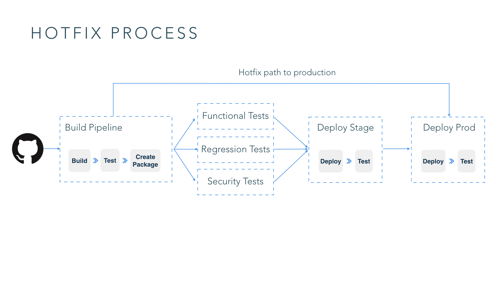

A microservice architecture builds software as suites of collaborating services. These architectures are generally accepted as a better way to build apps these days. Continuous Delivery is an essential component of any software delivery practice. Regardless of the target deployment environment, you have to design a CD workflow to get software changes into production.
At ThoughtWorks, while partnering with clients building business-critical software, we overcome many challenges around building CD workflows for microservices. In this blog series, I will share the considerations we keep in mind in architecture design and application development.
Microservices and Continuous Delivery
According to Martin Fowler, microservices architectures are “a particular way of designing software applications as suites of independently deployable services.” These architectures are prevalent these days for building applications based on distributed systems concepts.
Jez Humble, in his pioneering book describes continuous delivery as "the ability to get changes of all types - including new features, configuration, bug fixes, and experiments - into production, safely and quickly in a sustainable way."
Regardless of the target deployment environment or your architecture choice, monolithic architecture in the past or microservices these days, it’s important to design a continuous delivery workflow to get your changes into production. A CD workflow is central to a DevOps process, and spans well across various functions in an organization including your development, QA and IT operations.
Four Challenges for CD on Microservices
-
Maintaining the integrity of complex distributed systems. Since you decompose a large monolithic system into smaller, more manageable microservices, the overall complexity of the system itself increases. You now have to deal with distributed systems concerns.
-
Safely and rapidly releasing features constantly. Managing frequent feature releases needs special consideration when your features could involve changes in one or many microservices.
-
Managing deployments of disparate technology stacks. Microservice environments often include disparate technology stacks for services. Managing a deployment process across these different stacks is challenging.
-
Process and tooling for deploying services independently and out of band. There are a lot of tools available to model CD workflows. It’s daunting to initially map out your CD workflow and pick tooling that best represents this workflow.
Five Considerations for CD on Microservices
There are five considerations I recommend keeping in mind when you design a CD workflow on microservices architectures. I will have an in-depth discussion for each of them in the following posts of this series. Here is just an overview:
1. Have an effective test strategy

Testing and verification of microservice systems is significantly more nuanced and complex than testing a traditional monolithic application. An effective test strategy needs to account for both testing individual services in isolation and the verification of overall system behavior.
For pre-production testing of services, especially in an isolated manner, traditional testing methodologies are still applicable and relevant. The test pyramid can still help you in maintaining a balance between the different types of tests. However, this style of testing has limited effectiveness when testing the aggregate of services. There are categories of errors that you can’t simulate in test environments, for example, issues caused by eventual consistency in a highly distributed system, hardware and network failures causing parts of the system to fail.
You have to supplement traditional testing techniques with techniques like synthetic user testing, lightweight user acceptance testing and fault injection testing.
2. Examine your CI practices
Continuous integration is a key practice in a successful continuous delivery strategy. Apart from the obvious considerations around build servers and build definitions, trunk based development and feature toggles are two key practices that go a long way in implementing a simple and robust CI process.
In trunk based development, developers collaborate on code in a single branch called “trunk.” The key benefit is to avoid drift in development branches and the resulting merge hell. This is contrary to the practice of maintaining long-lived feature and release branches. In a branching model, though you may be running builds on individual branches, arguably you aren’t doing continuous integration.
To do trunk based development, you need to have controls called feature toggles. Feature toggles enable multiple commits of a combination of WIP and completed features. With these toggles, you can turn off the manifestation of incomplete features in production, until the features are dev complete and testing sufficiently in pre-production environments. Feature toggles are usually stored in a specification or configuration file close to the codebase and used by automation in the CD pipeline to turn toggles on in specific environments.
Once you have a mechanism for maintaining feature toggles, you can use the same mechanism to introduce other categories of toggles like release toggles (to control access to unfinished code), Ops toggles (to control the behavior of production code), permissions toggles (to turn on specific behavior for privileged users), and experimental toggles (for multivariate testing - How well a feature is received before you make it permanent).
3. Plan your environments

An environment plan includes your sets of environments, the intended use of them, strategies to promote artifacts through these environments and toggle states on these environments.
First, think about what environments are needed and their intended use cases. Different groups in your organization will have different competing needs. When creating an environment, you should cater to all of these competing needs. Secondly, if possible, consider using cloud infrastructure to create environments dynamically. For example, use Kubernetes’ labels capability to create on the fly test environments for automated testing rather than have long lived environments. Thirdly, have an artifact promotion strategy. CD pipelines generate a lot of artifacts. You should you think about: how many artifacts to store, how many repositories you need, etc.
4. Manage configuration strategically
An application’s configuration includes everything that varies per deployment and should be stored separately from the code. How should you treat configuration when you have suites of microservices?
One technique we've seen to be useful is to manage deployment configuration centrally in repositories like Consul or Vault. Spreading deployment configurations across tools like Chef and the CD pipeline just makes it hard to understand and reason.
Another technique we use is to standardize processes for distributing configuration regardless of the technology stack of your services, and just let services handle the consuming of this configuration depending on the stack. For example, we generally use the 12-factor recommendations and avoid distributing configuration files.
And lastly, secrets like certificates need a governance process to ensure they are managed appropriately. This is usually a manual process but you need to think about it earlier and get it in place.
5. Prepare for things to go wrong
In microservices systems, multiple services get updated frequently, how do you respond when a deployment of a service introduces instability or bugs?
Roll forward, which means finding the root cause of a failure and applying the fix as soon as possible, is most times the best remediation response. A prerequisite for being able to do this is to ensure you have the capability to release from a hot fix branch straight to production. You may not want a fix to a production outage to go through the CD pipeline, depending on the time it takes for a change to make it through the pipeline.

Rollbacks are always tricky in production systems. In most cases if the change is granular and can be reasoned about, it’s easy to rollback. But if the deployment includes changes that aren’t easy to reason about, e.g., DB changes, especially ones that make schema changes, you need to deploy DB changes separately from code changes in consecutive deployments to ensure backwards compatibility of DB changes with earlier versions of code.
Summary
This is the part 1 of our Continuous Delivery of Microservices blog series. We have talked about four challenges and five considerations for building CD pipelines on microservices architecture. In the next blog, I will have an in-depth discussion on the first consideration: testing strategy for a system based on microservices architectures.